모임 후기
괴물의 날개는 왜 빨강이었을까
올해 노벨문학상을 받은 앤 카슨의 시로 쓴 소설. "솔직히 어려웠다"는 고백으로 시작했지만, 형용사와 빨강, 자서전과 사진이라는 열쇠 몇 개를 쥐고 나니 날개 달린 소년의 이야기가 조금씩 우리 이야기로 넘어왔습니다. 책미사에서 처음으로 단둘이 마주 앉아 끝까지 이어 간 밤이었습니다.

- 솔직한 난해함상을 받지 않았다면 누가 이 책을 펼쳤을까
- 나에게 붙은 형용사남이 붙여 준 말과 벗고 싶은 말
- 왜 빨강이었을까괴물을 아름답게 보이게 하는 단 하나의 색
- 3인칭의 자서전나를 조금 떨어져서 바라보는 기록

로그인 없이 바로 받기
이 모임을 PDF 한 권으로
후기 전문, 진행 자료 슬라이드 17장, 그날의 한 줄까지 A4 15쪽에 담았어요.
PDF 내려받기 3.9MB
후기 전체 읽기
11월 21일 토요일 밤, 앤 카슨의 『빨강의 자서전』으로 모였습니다. 진행한 에스파다와 끝까지 다 읽고 온 플라잉, 바깥에 있어 듣기만 하며 함께한 꼬북, 수업을 마치고 막바지에 들어온 단아, 그리고 귀로 함께한 소리까지였습니다.
말을 주고받은 건 에스파다와 플라잉 둘. 책미사를 하며 단둘이 마주 앉아 처음부터 끝까지 이어 간 건 이날이 처음이었습니다. "거의 라디오 준비하듯이"라는 방장의 말에, 플라잉은 그날 오전 4인 선착순 데드리프트 특강에 갔더니 신청자가 자기 하나뿐이라 트레이너와 일대일로 수업을 받고 왔다며 "오늘은 일대일의 날이네요" 하고 웃었습니다.
시작 — 솔직히, 어려웠다
플라잉의 첫마디는 "오늘 다 읽었습니다"였고, 바로 다음 말은 "근데 이게 뭐야? 했어요"였습니다. 다시 한번 읽으면 뭔가 들어올까, 오늘 이야기를 듣고 다시 읽으면 '아, 이게 엄청난 시구나' 싶을까. 그런 마음으로 왔다고요.
에스파다도 다르지 않았습니다. 읽는 내내 "이거 괜찮은 거 맞냐, 도대체 왜 이러냐" 하며 AI에게 이것저것 물어 가며 읽었다고 했습니다. 책미사는 해마다 10월에 노벨문학상이 발표되면 그해 수상 작가의 책을 꼭 한 권 함께 읽어 왔습니다. 안 읽어 보고 "노벨상 책은 다 어렵다"고 말할 수는 없으니, 일단 읽고 나서 솔직하게 말해 보자는 것이 이날의 출발이었습니다.
"상을 받지 않았다면 누가 이 책을 꺼내 봤을까요. 작가는 우리를 설득할 마음이 별로 없는 것 같아요. 그런데 그 태도가, 이 책이 하는 이야기와도 닮아 있지 않나 싶어요."
1964년 노벨문학상을 거절한 사르트르 이야기도 나왔습니다. 상업성을 멀리하려고 실험하는 작가를 고른다지만, 발표되는 순간 그 책은 가장 잘 팔리는 책이 됩니다. 우리가 읽는 것이 책인지, 한림원의 해석인지. 그 물음을 안고 우리도 이 책에 '참전'한 셈이라고요.
어디서 길을 잃었을까
길을 잃은 자리는 비슷했습니다. 이 책은 그리스 신화를 뒤집어 씁니다. 원래 이야기에서 게리온은 헤라클레스에게 죽는 날개 달린 빨간 괴물이고, 헤라클레스는 영웅입니다. 카슨은 게리온을 날개를 숨기고 사는 예민한 소년으로, 헤라클레스를 그 소년의 첫사랑으로 다시 씁니다.
신화를 아는 사람에게는 그 뒤집기가 읽히지만, 신화가 낯선 사람은 반드시 길을 잃을 것 같다는 이야기였습니다. 게다가 소설이 아니라 시로 썼으니 친절한 설명이 없습니다. 에스파다는 해석의 폭이 너무 큰 이야기라 일부러 시로 쓰고 생략한 게 아닐까 짐작했습니다.
괴물이나 악당 편에서 다시 쓴 이야기로 이야기가 번졌습니다. 고전 『이방인』도, 악당을 주인공으로 내세우는 요즘 영화들도 떠올랐습니다. 선과 악의 경계가 예전처럼 또렷하지 않은 시대에, "우리가 알던 영웅은 사실 그 영웅의 편에서 쓴 이야기였다"는 것이 이 책의 질문 같다고요.
나에게 붙은 형용사
책에서 하나 가져갈 만한 것으로 에스파다가 꺼낸 것은 '형용사'였습니다. 나에게 붙은 형용사는 무엇일까요.
플라잉은 바로 "활기찬"이라고 답했습니다. 사무실에서도 늘 "힘차다, 건강하다"는 말을 듣는다고요. 에스파다는 책미사에서 가장 많이 들은 말로 "차갑다"를 꼽았습니다. 늘 진행하고, 톡방에서 가장 말을 많이 하는 사람이다 보니 그렇게 보일 수밖에 없다고요.
남이 붙여 주는 형용사가 있다면, 벗어 던지고 싶은 형용사도 있습니다. 사람의 얼굴과 표정은 살아온 환경을 닮아 간다는 이야기도 나왔습니다. 태어날 때는 다 아기 얼굴이지만, 사는 동안 얼굴이 바뀐다고요. 그래서 가끔은 말없이 있는 내 얼굴을 거울에 비춰 보자고 했습니다.
왜 빨강이었을까
에스파다는 빨간색을 좋아한다고 했습니다. 플라잉도 빨강을 좋아했다고 했습니다. 아버지가 좋아하던 색이었고, 서해안 바닷가 마을에서 자라며 아침 등굣길에 바다 위로 붉게 떠오르던 해를 보는 게 그렇게 좋았다고요. 노을이 아니라, 아침에 뜨는 빨간 해였다고요.
그러면 카슨은 왜 이 괴물에게 빨강을 입혔을까요. 에스파다의 생각은 이랬습니다. 괴물을 그냥 괴물로만 그렸다면 우리는 이 아이를 아름답게 보지 못했을 것이다. 천사의 날개, 용의 붉은 날개처럼 빨강은 아름다움의 느낌을 주는 색이라, 상처 입은 소년의 수치심과 욕망과 분노를 한꺼번에 품기에 가장 알맞은 색이 아니었을까.
그리고 이건 책의 힘이기도 합니다. 이 책을 읽은 사람에게 빨강은, 이제 날개 달린 게리온과 함께 떠오를 테니까요.
헤라클레스와 앙카시, 그리고 엄마들
"더 많이 사랑한 쪽이 약자가 된다." 헤라클레스를 두고 에스파다는 망설임 없이 "나쁜 남자의 전형"이라고 했습니다. '그저 다르게 사랑하는 사람'이라고 감싸는 사람이 이날 있었다면 한번 붙어 봤을 텐데, 아쉽게도 없었다며 웃었고요. 게리온에게 정말 필요했던 사람은 둘만 있을 때는 한 번도 날지 못하게 했던 헤라클레스가 아니라, 셋이 만난 자리에서 날개를 펴게 한 앙카시가 아니었을까 하는 이야기도 나왔습니다.
플라잉은 조금 다른 곳을 봤습니다. 가장 상처받은 사람은 앙카시 아니냐고요. 연인 곁에 옛 연인이 다시 나타났으니까요. 그리고 이 책에서 가장 멋있었던 인물로 엄마들을 꼽았습니다. 담배를 달고 사는 게리온의 엄마도, 앙카시의 엄마도 자식에게 목매지 않고 한 사람으로 바라보며 거리를 두는 모습이 좋아 보였다고요.
헤어진 첫사랑을 다시 만나는 장면에서는 영화 「만약에 우리」와 드라마 「연애시대」가 소환됐습니다. 첫사랑이 차 한잔하자고 하면 나가겠느냐는 질문에는 둘의 대답이 엇갈려 한바탕 웃음이 났고요. 오랜만에 다시 만난 사람 앞에서, 아무리 자랐다 해도 그 시절의 내가 되어 다시 작아지는 것. 게리온이 헤라클레스 앞에서 그랬던 것처럼요.
3인칭으로 쓴 자서전
이 책은 '자서전'이라면서 게리온을 '나'가 아니라 '게리온'이라고 부릅니다. 에스파다는 이것을 나와 나 사이에 거리를 두는 방법으로 읽었습니다. 열세 살의 게리온과 스물두 살의 게리온은 다른 사람처럼 따로 찍힌 사진 같다고요.
마침 플라잉이 손을 들었습니다. 자기가 바로 그런 사람이라고요. 직장에서도 "저는 오늘 기분이 이래요" 대신 자기 이름을 넣어 말하곤 해서 "유치원생이에요?"라는 말을 들은 적도 있다고 했습니다. 그렇게 말하면 나를 조금 객관적으로 볼 수 있었다면서요. 3인칭 자서전의 실제 주인공이 화면 속에 있었던 셈입니다.
러시아 소설 속 길고 여러 개인 이름 이야기도 나왔습니다. 이름이 셋이면 그 사람의 세 가지 얼굴을 독자에게 보여 주는 것처럼, 3인칭 자서전에도 쓰는 나와 쓰이는 나, 적어도 두 사람이 있다는 것이죠.
요즘은 AI가 그 '바라보는 눈'이 되기도 합니다. "너는 나를 어떻게 생각해?"라고 물었을 때 돌아오는 내 모습은, 내가 아는 나와 같기도 하고 아니기도 하니까요.
사진과 기록에는 좋은 날만 남는다
게리온은 자라면서 사진을 찍습니다. 사진은 그때의 나를 고스란히 붙잡아 둡니다. 여기서 이날 가장 오래 남은 이야기가 나왔습니다.
에스파다는 일주일에 한 번씩 주식 종목마다 수익을 적어 왔는데, 시장이 안 좋은 몇 주 동안은 한 줄도 적지 않았다고 털어놓았습니다. 좋을 때는 신나게 적는데, 괴로울 때는 적을 힘이 없더라고요. 감사 일기를 언제 쓰느냐고 물으면, 괜찮을 때 쓴다고요.
"기록에는 좋았던 날이 남는다. 정말 괴로운 날을 적을 수 있는 사람이 얼마나 될까. 어쩌면 내 역사에서 지워진 부분이 오히려 나를 지탱해 주는 건지도 모른다."
플라잉도 고개를 끄덕였습니다. "못 쓰죠." 그러면 자서전에 정말 남겨야 할 것은 무엇일까요. 에스파다는 군 시절 사진 이야기를 덧붙였습니다. 이병 때 사진은 표정 하나 없이 굳어 있는데, 일병, 상병, 병장으로 갈수록 얼굴이 조금씩 풀리더라고요. 사진은 숨기려 해도 그때의 나를 드러내고 만다는 것.
그리고 무뎌진 사람을 보고 감정이 메말랐다고만 볼 일은 아니라는 말로 이어졌습니다. 그만큼 단단해지기까지 겪은 일이 한두 번이 아니었다는 뜻일 수도 있으니까요.
낯선 곳에서 흐르는 시간
게리온은 낯선 도시에서 새로운 사람을 만나고서야 날개를 폅니다. 에스파다는 여행을 즐기는 편이 아니라, 외국에 홀로 떨어진다면 멘붕일 것 같다고 했습니다. 그러면서도 익숙한 사람, 익숙한 환경을 벗어났을 때 흐르는 시간은 질적으로 다를 것이라고 했습니다.
단둘이 이어 간 이날 모임도 어쩌면 그런 낯선 시간이었습니다. 에스파다는 일대일로 사람을 만나면 상대가 편하도록 일부러 쉬지 않고 떠드는 편이라며, "말 많은 사람이 그냥 말이 많은 게 아닐 수도 있다"고 했고, 플라잉은 "배려네요" 하고 받아 주었습니다.
모임이 끝날 무렵
막바지에 수업을 마친 단아가 들어와 2학기 시험 기간 이야기를 나눴습니다. 1학기와 달리 학교마다 시험이 길게 늘어지고 입시까지 사이사이 끼어, 쉴 틈 없이 간다고요.
방장은 휴대폰으로 QR을 찍으면 바인더에 들어오는 모임 카드를 보여 주었습니다. 모임이 끝나고 참석이 기록되면 봉인이 풀리는, 그날 온 사람만 가질 수 있는 카드입니다. "오늘 같은 날 카드는 SSS 등급이에요. 사람이 진짜 없었으니까." 희귀 카드가 인기 없는 날에 나온다는 아이러니에 다들 웃었습니다.
마치며 한마디
- 플라잉: 이해가 다 되지 않은 채로 끝까지 읽고 왔습니다. 빨강은 어릴 적 바닷가에서 보던 아침 해 같은 색. 둘이서 이어 간 모임이었지만 "좋았어요"라는 말로 마지막을 닫았습니다. 다음 오프 모임에도 반드시 간다고요.
- 에스파다: 쉽지 않은 책이었지만, 형용사, 빨강, 자서전, 기록. 이 몇 개의 열쇠만 머릿속에 담아 두어도 "이 책이 말하고 싶었던 게 이런 거였구나" 하는 데까지는 갈 수 있을 것 같습니다.
회원들의 말은 이름 없이 옮겼습니다.
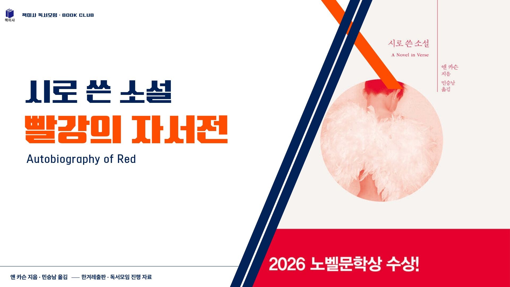
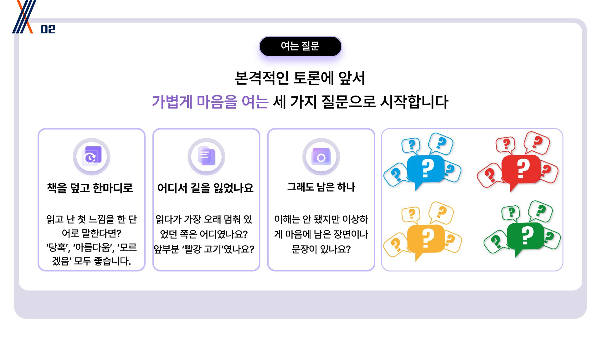
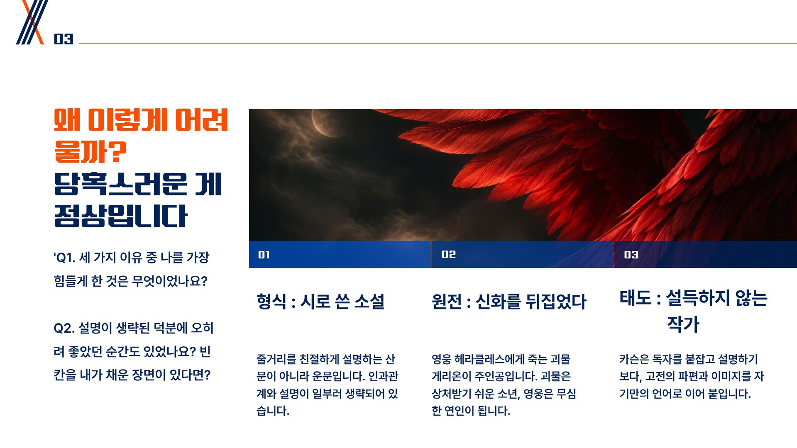
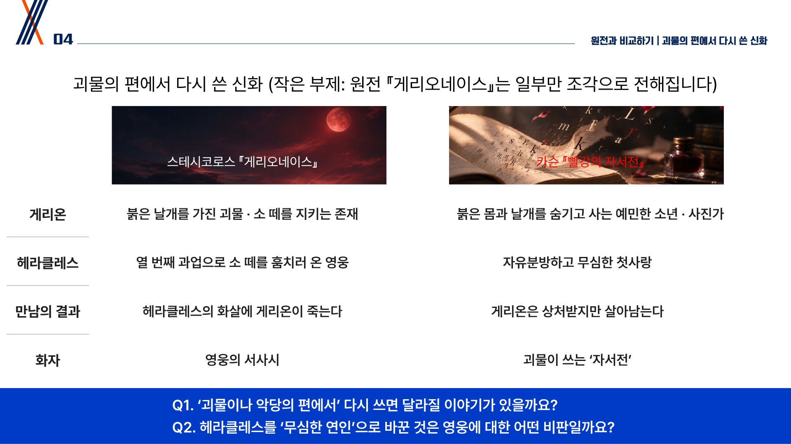
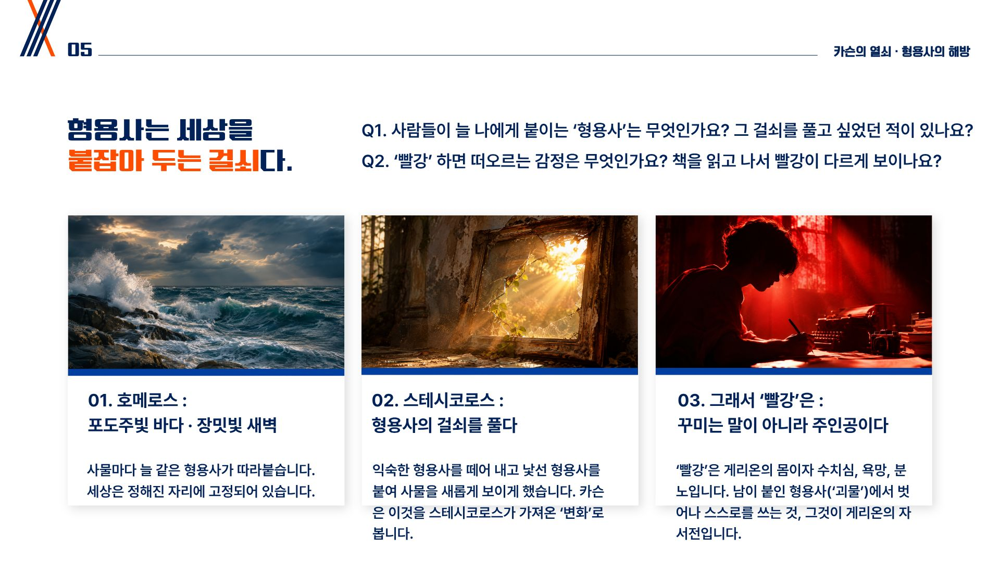
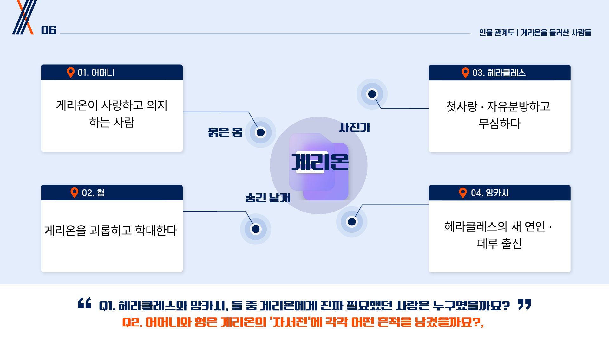
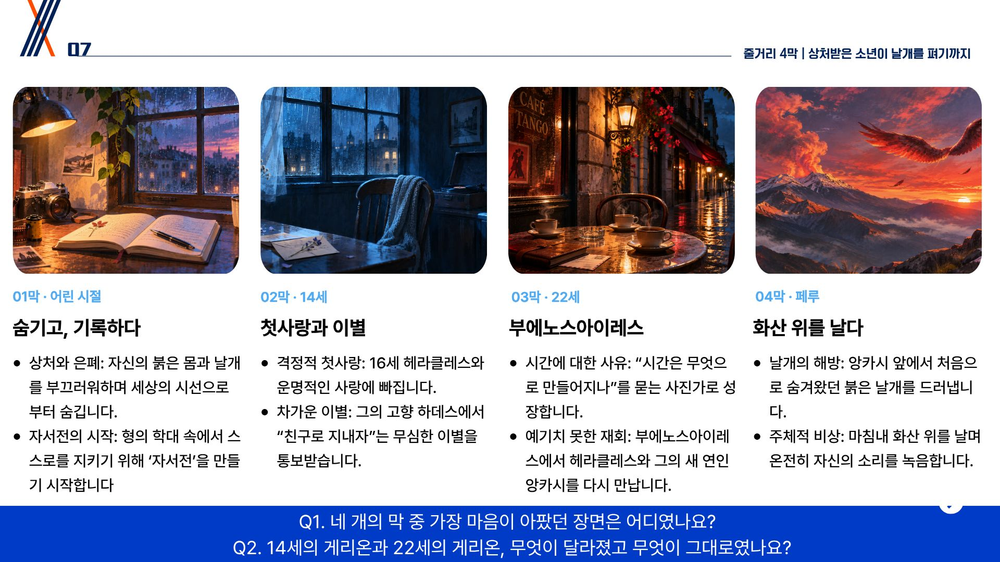
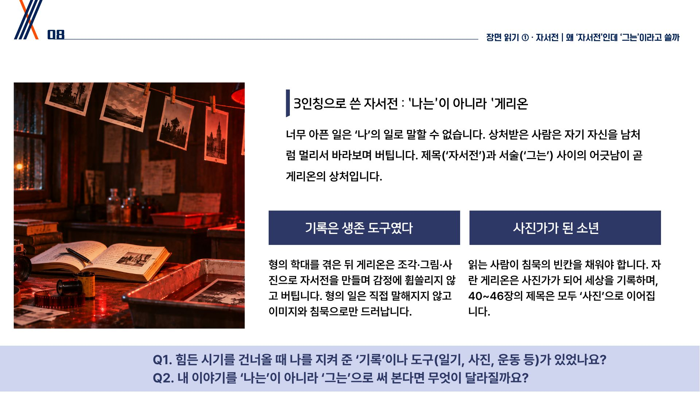
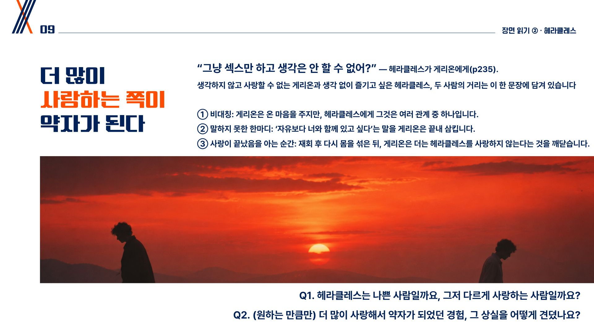
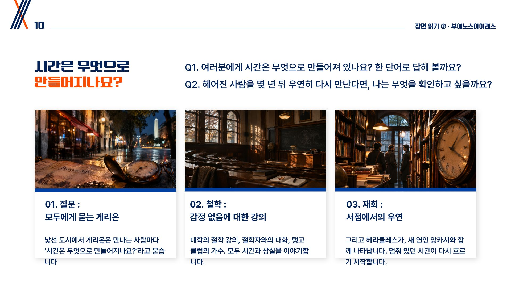
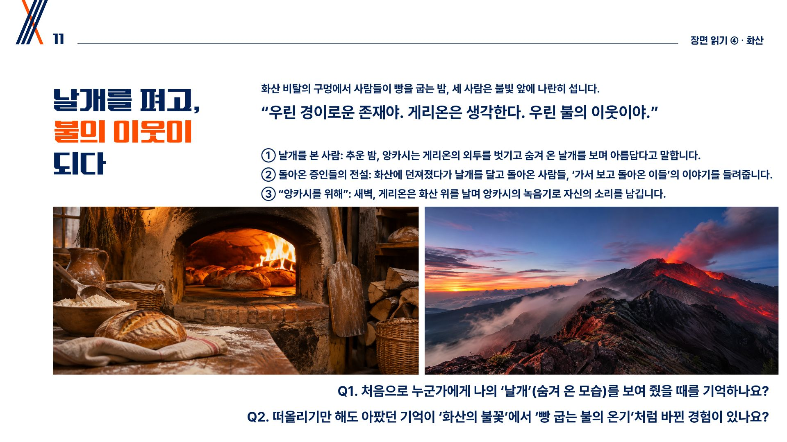
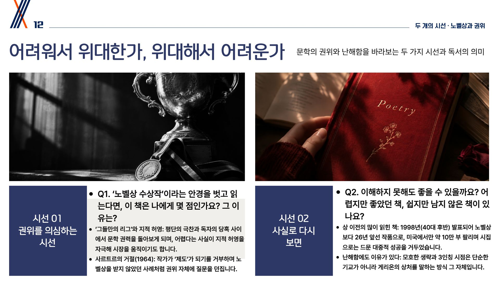
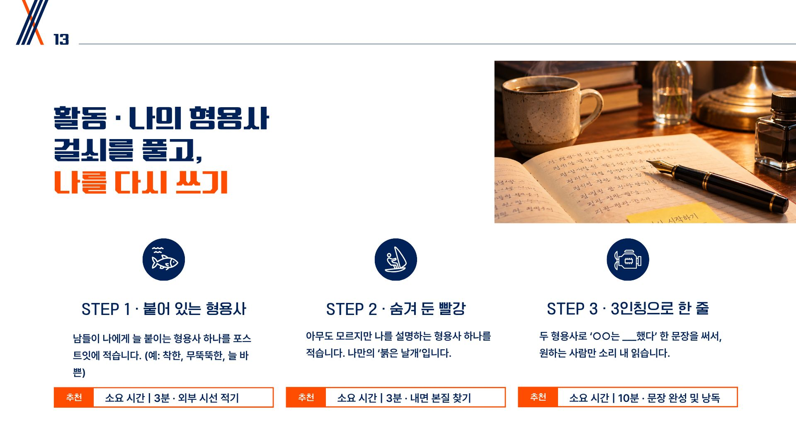
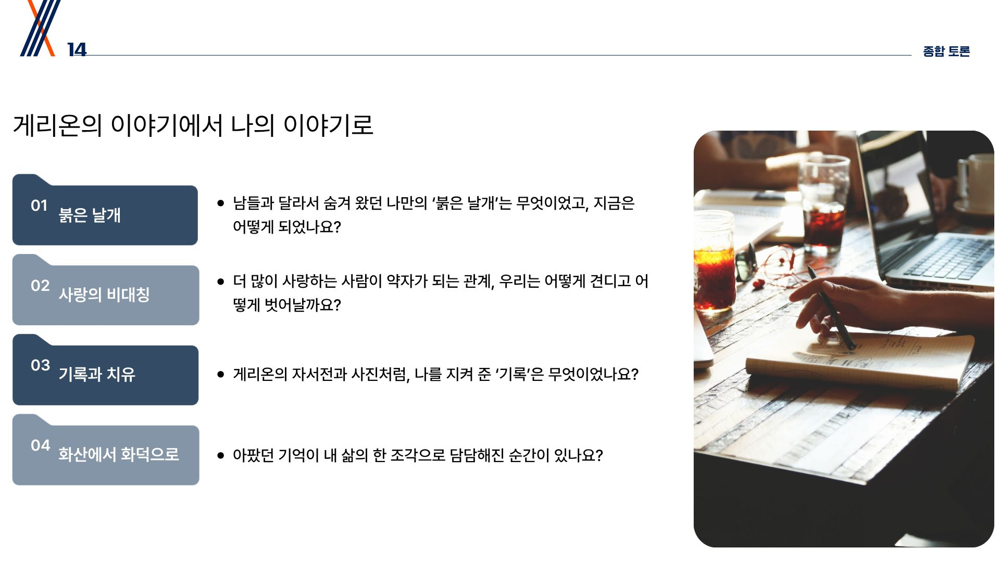
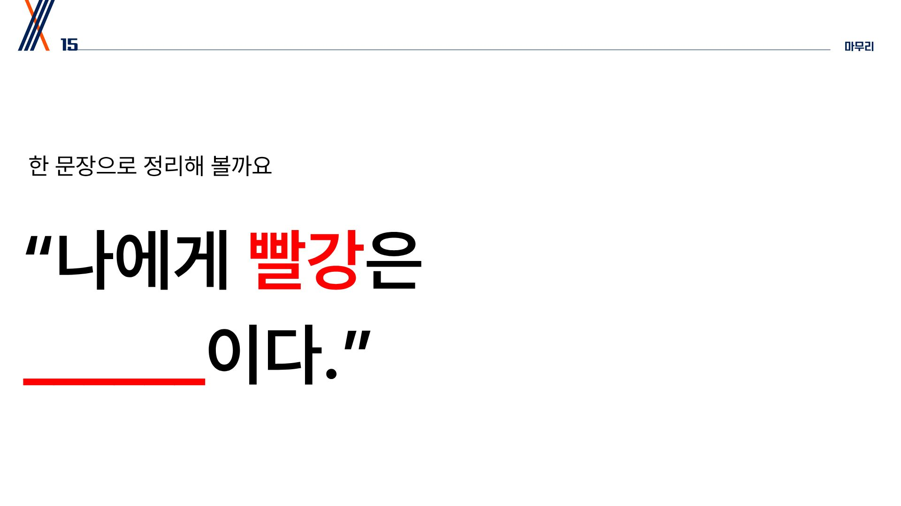